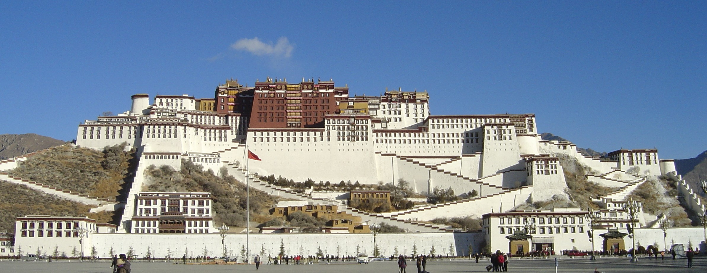
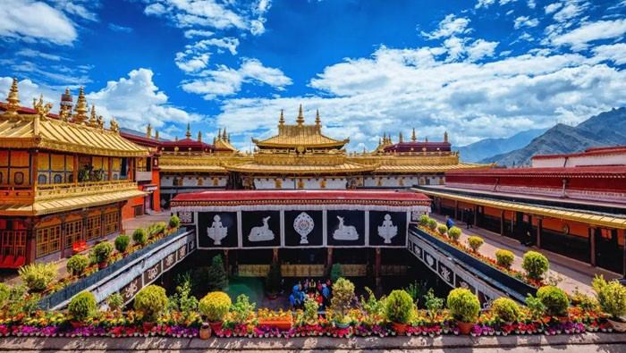
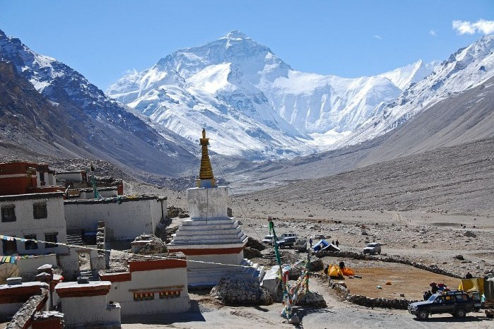
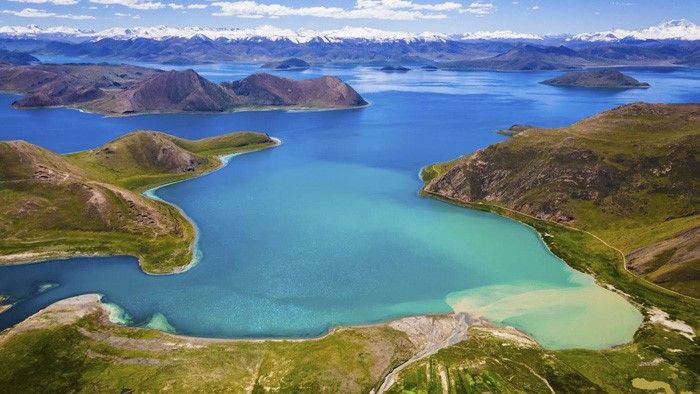

Top Places to Visit in Tibet
Tibet is known for its stunning landscapes, historical landmarks, and spiritual destinations. Here are some of the must-see places when traveling to this beautiful region:
Famous Attractions in Tibet
-
🏯 Potala Palace
The Potala Palace, once the winter residence of the Dalai Lama, is an iconic symbol of Tibetan Buddhism and a UNESCO World Heritage Site.
 -
🙏 Jokhang Temple
Located in Lhasa, Jokhang Temple is considered the spiritual heart of Tibet. It is one of the most sacred places for Tibetan Buddhists.
 -
⛰️ Mount Everest (Tibet Side)
The Tibetan side of Mount Everest offers stunning views of the world's highest peak, with the base camp being a popular destination for adventurers and trekkers.
 -
💙 Yamdrok Lake
Yamdrok Lake is one of Tibet's most beautiful and sacred lakes, known for its stunning turquoise waters and surrounding mountains.
